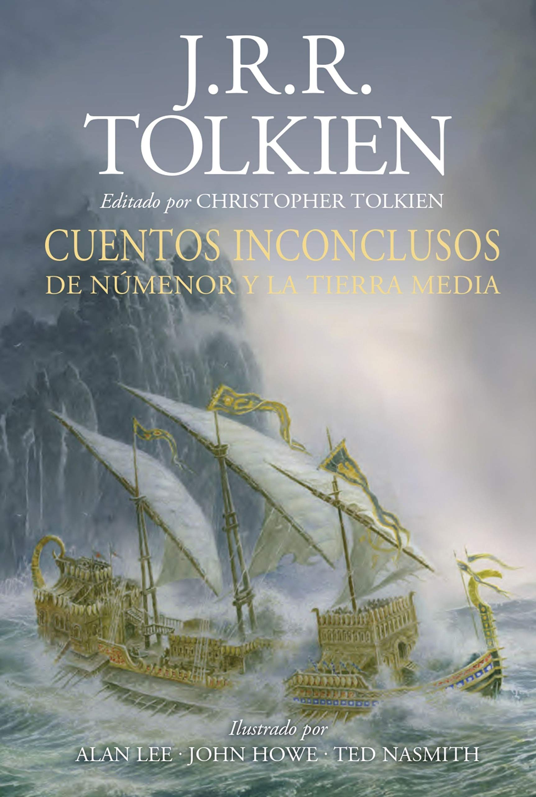

Al contrario que en 'El Silmarillion', en el cual se modificaron los fragmentos de la narrativa para conectarlos y crear una obra consistente y coherente, los 'Cuentos Inconclusos'
se presentan como Tolkien los concibió, con el ligero cambio de algunos nombres (el autor tenía el hábito de inventar distintos nombres para un personaje mientras escribía sus
borradores). De esta manera, algunas de estas historias están incompletas, mientras que otras son colecciones puramente informativas acerca de la Tierra Media. Cada cuento
está acompañado de una larga serie de notas aclarando puntos inconsistentes y oscuros.
Como ocurrió con 'El Silmarillion', Christopher Tolkien editó y publicó los 'Cuentos Inconclusos' antes de terminar de estudiar a fondo los materiales del archivo de su padre.
A pesar de su escasa consistencia editorial, los Cuentos inconclusos proporcionan información más detallada acerca de los personajes, hechos y lugares que únicamente
mencionaban brevemente en 'El Señor de los Anillos'. Las versiones de historias como los orígenes de Gandalf y los Istari (los Magos), la muerte de Isildur y la pérdida del
Anillo Único en los Campos Gladios, y la fundación del reino de Rohan ayudan a aumentar el conocimiento sobre la Tierra Media.
Fuente: Wikipedia